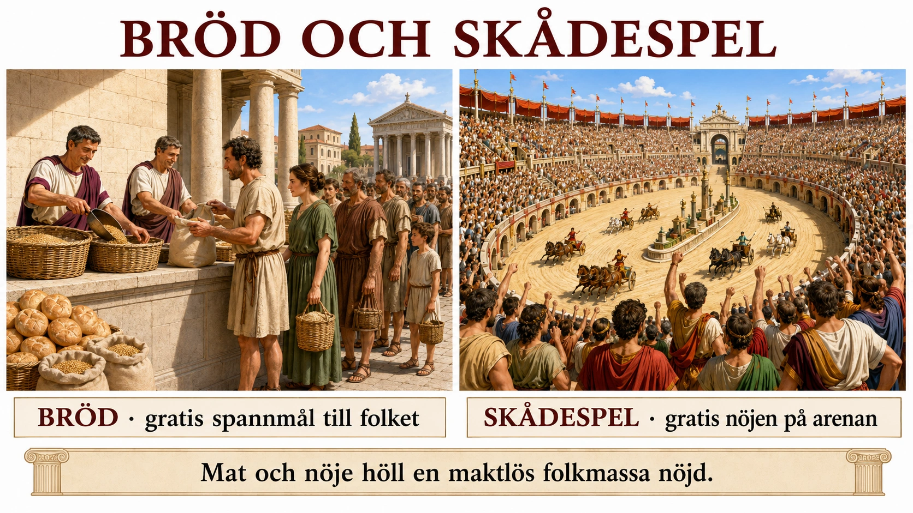

I förra delen såg vi att vanliga romare förlorade sin verkliga politiska makt när kejsardömet ersatte republiken. Men då uppstår en fråga: hur håller man en jättelik stadsbefolkning lugn och nöjd, när den inte längre har något att säga till om? Rom var en miljonstad full av fattiga, arbetslösa och missnöjda människor. En hungrig och uttråkad folkmassa är farlig. Kejsarnas svar på problemet sammanfattades av en romersk diktare i två ord: bröd och skådespel.

Brödet. Den romerska staten delade ut gratis eller billigt spannmål till stadens fattiga — en sorts tidig mathjälp som kunde omfatta hundratusentals människor. Tanken var enkel och effektiv: en människa med mat i magen gör inte uppror. Genom att garantera brödet köpte kejsaren lugn. Att förse Rom med spannmål, mest från Egypten och Nordafrika, blev en av statens allra viktigaste uppgifter — misslyckades skörden eller transporten kunde staden explodera i upplopp.
Skådespelen. Det andra verktyget var underhållning, i en skala vi har svårt att föreställa oss. Kejsarna bekostade väldiga, gratis folknöjen: vagnkapplöpningar på Circus Maximus inför hundratusentals åskådare, och strider och djurjakter på arenor som Colosseum. Det var storslaget, spännande och ofta blodigt — gladiatorerna som slogs var till största delen slavar, fångar och dömda brottslingar, och många dog. Poängen här är inte detaljerna i våldet, utan vad spelen gjorde: de gav folket något att samlas kring, jubla åt och prata om, i stället för politik. Och kejsaren satt högst upp, syntes för alla, delade ut nåd eller död med en gest — spelen var också en scen där härskaren visade sin makt och sin frikostighet.
Diktarens udd. Uttrycket "bröd och skådespel" myntades faktiskt som kritik. Diktaren som skrev det menade att det romerska folket, som en gång stolt hade röstat och format sin republik, nu hade sålt bort allt det för en full mage och gratis underhållning. De brydde sig inte längre om vem som styrde eller hur — bara maten och spelen fanns kvar. Det var en bitter iakttagelse om hur ett folk kan lockas att byta bort sitt inflytande mot bekvämlighet och förströelse. De märkte knappt att friheten var borta, för de hade roligt.
Det knyter tillbaka till förra delens fråga: republiken dog inte bara i ett slag, den byttes bort — mot ordning, mot fred, och, visar det sig, mot bröd och nöjen. Och det är en tanke värd att bära med sig ända in i vår egen tid. Bröd och skådespel är inte bara antik historia. Fråga dig själv: kan människor fortfarande hållas nöjda och oengagerade med bekvämlighet och underhållning, så att de inte bryr sig så mycket om makten över deras liv? Romarna ställde frågan för tvåtusen år sedan. Den är inte avslutad.